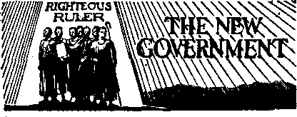
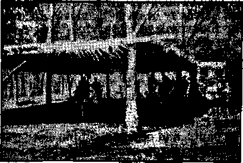
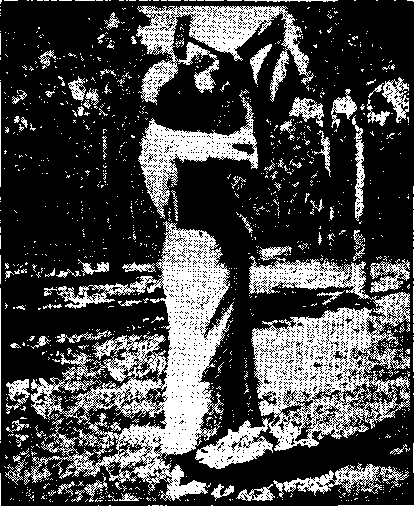
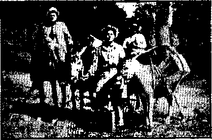
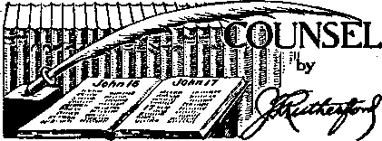

The “New Order” in America (Part 2)
Vicious Un-Americanism of the Legion
The New Government
A Tr a van core, India, Convention
Counsel by J. F. Rutherford
Under the Totalitarian Flag
The “Right” to Murder “Heretics”
“Spiritual Instruction” from the Vatican 24 “The Earth Abideth for Ever”
German Prisoners in Isle of Man
Churchill Describes the “New Order”
The Not-so-good Captain Wright
Published every other Wednesday by WATCHTOWER BIBLE AND TRACT SOCIETY, INC.
117 Adams St., Brooklyn, N, T., U. S. A.
Editor Clayton J. Woodworth
Business Manager Nathan H, Knorr
Five Cents a Copy $1 a year in the United States $1.25 to Canada and all other countries
NOTICE TO SUBSCRIBERS
Remittances: For your own safety, remit by postal or express money order. When coin or currency is lost in the ordinary mails, there is no redress. Remittances from countries other than those named below may be made to the Brooklyn office, but only by International postal money order.
Receipt of a new or renewal subscription will be acknowledged only when requested. Notice of Expiration is sent with the journal one month before subscription expires. Please renew promptly to avoid loss of copies. Send change of address direct to us rather than to the post office. Your request should reach us at least two weeks before the date of issue with which it is to take effect. Send your old as well as the new address. Copies will not be forwarded by the post office to your new address unless extra postage is provided by you.
Published also in Afrikaans, Bohemian, Danish, Dutch, Finnish, French, German, Greek, Hungarian, Japanese, Norwegian, Polish, Portuguese, Spanish, Swedish, Ukrainian; also special Australian edition in English.
OFFICES FOR OTHER COUNTRIES
England 34 Craven Terrace. London, W. 2
Canada 40 Irwin Avenue, Toronto 6, Ontario Australia 7 Beresford Road, Strathfield, N.S.W. South Africa • £23 Boston House, Cape Town
Entered as second-class matter at Brooklyn, N. Y., under the Act of March 3, 1879.
Why Does the Legion Violate Its Pledge? ♦ The preamble to the Constitution of the Legion is all right, if legitimate means were used to obtain their ends. It reads:
For God and Country, we associate ourselves together for the following purposes: To uphold and defend the Constitution of the United States of America; to maintain law and order; to foster and perpetuate a one hundred percent Americanism; to preserve the memories and incidents of our association in the Great War, to inculcate a sense of individual obligation to the community, state and nation; to combat the autocracy of both the classes and the masses; to make right the master of might; to promote peace and good will on earth; to safeguard and transmit to posterity the principles of justice, freedom and democracy ; to consecrate and sanctify our comradeship by our devotion to mutual helpfulness.
But the Legion has done the opposite of all this, having been corrupted by the influx of agents of the Roman Catholic Hierarchy, As a result they have been active in anarchistic attacks upon peaceable and law-abiding people, seriously injuring them and wholly disregarding their rights, in genuine “new order” style.
There was a more than implied rebuke in the statement made to the Legion by J. Edgar Hoover, of the Federal Bureau of Investigation, that there is no need for citizens to band themselves together to take charge of a situation already under control. Certainly it is no high recommendation of a government for citizens to resort to lawlessness and violence to “support” the government.
The Legion has usurped police powers in numerous instances, and in other places has dictated to the courts, and is justly infamous all over America as actually doing more to interfere with the rights of Americans than any other organization except the Roman Catholic Hierarchy, which is back of all such un-Americanism.
“And in His name shall the nations hope.”—Matthew 12:21, A.R.V.
Volume XXII Brooklyn, N. Y., Wednesday, September 3, 1941 Number 573
The “New Order” in America
(In Two Parts—Part 2)
IN THE “new order” of the pope and
Hitler, at present making havoc of Europe, civil rights do not exist. The people have only one right, and that is to do what they are told to do by the two supreme ruling powers, the pope and the dictator. This is also the plan for America. The increasing tendency to glorify the executive and to magnify his power has been noted in the preceding issue. Attention is here given to other elements in the “new order” setup.
Interference with Civil Rights
What organization in the United States has proved itself in the last year as “the most active agency of interference with civil rights”? That is an interesting question. To get the answer the American Civil Liberties Union inquired of its correspondents in 46 states and learned that their unanimous opinion is that it is the most blatantly “patriotic” organization in the country—The American Legion. Of course, this organization claims that its very first principle is to uphold and defend the Constitution of the United States; that it is committed to the maintenance of law and order; and that it aims to foster and perpetuate a 100-percent Americanism. Actually its activities have been the most unconstitutional, un-American and disorderly of any group in American history, without a single exception. “By their fruits ye shall know them.”
The Toledo Blade contains pictures of the Legion entering Holy Rosary7 Cathedral on Armistice Day with 12 American
■ SEPTEMBER 3, 1941 flags, which stand for freedom of worship for everybody, and l2 Legion flags, which stand for the exact opposite. There is a fundamental agreement between flag-waving, lawless “patriotism” and image-worshiping, Godless religion. The latter is referred to in the Holy7 Scriptures as a “form of godliness, but denying the power thereof”. The former is a form of “patriotism” wholly without principle. Both are characteristic of the “new order” that is now seeking to take over America.
In this connection mention must be made of the thoroughly amazing Supreme Court decision in the flag-salute issue, which in fact was not a decision, and which has puzzled the American people greatly. The influence of the Hierarchy was seemingly7 so evident in it that it is difficult to avoid the conclusion that the “decision” was inspired by7 some instrument of that system, even though, with real Jesuit cunning, the actual writing of the document was left to one who would be least suspected to be so influenced. Nor must the influence of the great adversary7 of God and man be ignored. The Devil is the one who would stress the symbol at the expense of the reality, the image at the expense of the truth. Flags are comparatively7 cheap. One can hang out an abundance of them at relatively small cost of personal sacrifice or physical discomfort. Real patriotism is made of sterner stuff. It consists of adherence to fundamental principles and laws and devotion to welfare of the many rather than of the few. But
the flag-waving “patriotism”, because it is cheap, makes a direct appeal to those who are accustomed to bowing before images, crosses and other inanimate objects. [See Notanda, page 2.]
Vicious Un-Americanism of the Legion
Recognition of the rights of conscience is the cardinal principle of democracy. Failure to recognize this right or to grant it to others marks a person or organization as basically and seriously unAmerican. Yet this glaringly vicious attitude is outstanding in the American Legion despite its pious but hypocritical claims. Commenting on the expulsion of a child from the public school because it declined on conscientious grounds to salute a flag, the Ludlow (Mass.) Post of the Legion said that such action is the “American way”!
At Stillwater, Oklahoma, the commander of the Legion announced in a column article in a local paper that expulsion of conscientious children from the public schools “is in keeping with the true spirit of Americanism which should exist in the hearts of every good American”. Obviously Papal indifference to the rights of conscience are shown in these contradictory remarks. The man doesn’t know what Americanism is, but he is obviously a suitable tool for the “new order” of totalitarianism.
Here’s another on the un-American Legion. They called at a school in Ross Township, Pennsylvania, to see if they could not have the children of some of Jehovah’s witnesses deprived of an education (for which they were taxed). But the president of the school board, after the delegation waited upon him, declared that in his opinion too much stress had been placed upon reverence to the flag, and not enough upon reverence to God. He hit the nail right on the head.
Freedom of worship is the keystone of r the arch of freedom, as well as the foundation of all true liberty. God accepts no worship that is the result of coercion; for .such worship is a mockery, the most Devilish mockery that could be devised. Jehovah accepts only those who “worship him in spirit and in truth”. This is the reverse of the course taken by those of the “new order” persuasion.
At Clinton, Iowa, Arthur Miller, leader of un-American mobs, and commander of the American Legion of his city, together with his associates broke up a convention of Jehovah’s witnesses who were worshiping God in the proclamation of His Kingdom of righteousness. He and his additionally overawed the lawful police of the city and caused Jehovah’s witnesses to be arrested for “breaking the sabbath” I A typical “new order” piece of business throughout.
No wonder Raymond J. Kelly, when he was national commander of the American Legion, demanded a re-definition of the Bill of Rights. What had been produced at great cost by honest and conscientious men and defended over a period of 150 years by public-spirited and devoted judges was not to his liking. What he wanted was a bill that would make it less difficult for the Roman Hierarchy to seize control of America and suppress all real liberty.
The Cleveland Plain Dealer correctly evaluated the activities of the American Legion when it said, editorially:
If the United States gets into war it will be for the purpose of preserving human liberties. But if, in our preparation to battle for our liberties, we deliberately throw them away we shall have behaved as irrationally as the farmer who burned his wheat field to keep his neighbor’s cattle from tramping it down.
One of the dreaded features of the Nazi rule in. Germany has been the ability of unscrupulous individuals or groups to have persons against whom they hold a private grudge thrown into concentration camps as suspected traitors. Another has been the freedom given mobs to wreck the properties and even destroy the lives of their fellow citizens in the name of patriotism.
We had a taste of this sort of thing in the United States in the World War. Americans
whose ancestors came to this country years ago to escape being crushed by the Prussian heel were occasionally subjected to mistreatment by irresponsible groups of so-called patriots. _When it was all over we swore we would never do it again.
But we have done it again. In the last two weeks in various parts of the country, mobs have burned the headquarters of organizations whom they have assumed to be unpatriotic and have driven members of such organizations out of town or otherwise molested them.
Least excusable have been the attacks on a certain religious group which does not believe in saluting the flag. "We won’t win any wars for democracy by venting unwarranted fury against defenseless minorities at home.
This paper clearly recognized the fact that these shameless and unwarranted attacks upon those who are serving Jehovah God in spirit and in truth were and are prompted by the same spirit that has produced the Nazi reign of terror in Europe. It is this same spirit, emanating from the same age-old foe of true freedom, that is looking to the building up of a “new order” in America along the lines of that which now obtaihs in Europe, where Jehovah’s witnesses were also the first to suffer.
Says the New York Journal-American:
Nothing is more shameful in the United States than the outrages committed—from coast to coast—on the . . . Jehovah’s witnesses.
While we profess to be horror-struck over the outrages and cruelties of the Nazis we see our own people drag unoffending men and women through the streets and beat them— merely because they do not believe in any form of war or refuse to salute the flag. That is ho way to “educate” recalcitrant minorities or people with whom we differ. It’s an edifying spectacle for Hitler, Mussolini and Stalin while we mouth about the rights of minorities.
We want no Gestapos or OGPU’s in the United States. And an American mob is no better than a German or Russian mob. In fact, it’s far worse, for we are a democracy and we profess respect for the religious and civic
SEPTEMBER 3, 1941
rights of all men. Let us live up to that ideal.
Proposed Legionnaire Army
As in Europe, so in America, the proponents of the “new order” seek to clothe their subversive acts in the garments of legality; hence the proposal, emanating from Legion headquarters, that the Legion organize a private army of citizens from 18 years of age up, “to help the government.” The scheme had already been talked over with government and army and navy officials in Washington in the best Nazi style, when it was exposed and denounced by Major General Milton A. Reckord, commander of the Maryland National Guard. When Major General Reckord made his announcement, Raymond J. Kelly, the then commander of the Legion, and booked to be commander-in-chief of the new army, was at the important naval and military post of Norfolk, Va., and said that Reckord’s release to the press was premature. He wanted to keep it dark—for good reasons.
Referring to this proposed “castor oil” army, and the fact that it was intended to jam it through in four days without any discussion, the always intelligently patriotic Baltimore Evening Sun said:
Mr. Kelly complains that publication of the details of his proposal was “premature”. It seems to us, however, .that June 26 is not too early for the public to be informed of a plan to .protect them, beginning July 1 [1940], with a special army designed to co-operate with but not be responsible to the State and national defense organization. After all, such a step ought to be discussed for at least four days. Now that it is being discussed, the probability is that we shall hear no more of it. Unless Mr. Kelly’s possible successor in this field has better luck with the surprise element, the American people can be relied on to continue their preference for public armies rather than private armies.
While the scheme of constituting the American Legion a private army has
been temporarily scotched, it is well for Americans to keep an eye on it. The record of the Legion’s persecution of Jehovah’s witnesses for ever precludes any consideration of it for service where the public welfare is concerned. Nor is it amiss here to mention a number of examples of these persecutions by way of warning to others as to what they may expect if they come under the disfavor of the American Legion—and the Roman Hierarchy. ■ ,
At a time when the refusal of Jehovah’s witnesses to render unto “Caesar” that which rightly belongs to God should Y have been hailed as a beacon light in a storm-swept world, the American Legion took occasion to inflict upon these Godly men and women indignities and injuries unparalleled in the history of America. And it is significant that a number of instances on record revealed the complicity or instigation of Roman Catholic priests. ■
One thing the Hierarchy has learned thoroughly, and that is how to turn popular feeling to its own advantage. The efficient tools of the Devil now, as in the days of the Lord and His disciples, are the religionists, and particularly the “patriotic” religionists, who are doubly vicious. There is no reasoning with these. No argument avails with them; for they are moved by ungoverned passion and are therefore fit tools for the demons, who readily possess and control them in their attacks upon all who love righteousness. This demonized activity is a mark of the “new order”.
Every informed American is acquainted with the fact of the persecution of Jehovah’s witnesses in such places as San Antonio, Texas; Kennebunk, Maine; Litchfield, Illinois; Rawlins, Wyoming; and in other places. These instances are matters of history, and thoroughly demonstrate the viciousness with which supposedly religious and patriotic mobs will attack a minority that has the courage to proclaim the Truth, and to stand by its convictions. The persecutions continue. "While Jehovah’s witnesses are not concerned with the opinions of men, some press comments are mentioned to show that the Hierarchy, American Legion and other persecutors of the Lord’s servants are without excuse or justification, even if judged by the standards of decent men. Hereafter they will never be able to plead ignorance before the Lord.
William Brown, detective sergeant of the Portland, Oregon, police force, and an official of the American Legion, is reported in the Gresham (Oregon) Outlook as saying, “I wish all our citizens respected what the flag stands for as much as Jehovah’s witnesses do and then we would not have so much trouble.”
In an address in Toledo, Dr. A. D. Grey, pastor of the Washington Congregational church, made the statement:
The shocking persecution of the Jehovah’s witnesses is an evidence of Fascist and Nazi tendencies in this country. They are not fifth columnists. They are faithful Christians.
The Pennsylvania Grange News for January, 1941, has this to say:
The Grange has always stood for patriotism. The inculcation of respect not only for the flag but for those great principles of liberty, equality and justice, of which the flag is the symbol, are part of Grange teachings. We are not alarmed over the failure of a small religious sect, commonly known as Jehovah’s witnesses, which because of deep religious conviction refuses to go through the outward formality of a flag salute. Rather are we disturbed by those who, while giving lip and hand service to the flag, question or secretly sabotage the democratic principles which have made this country great.
At Gatesville, Texas, a mob estimated to number 800 to 1,000 broke up a convention of Jehovah’s witnesses there, and burned their Bible literature and even the plain wooden benches on which the witnesses sat while feeding on God’s Word. Edward S. Bayless, in the Gatesville Messenger and Star Forum, had the courage to denounce what the sheriff’s office had made no attempt to stop. He said:
Such action as occurred in Gatesville last Saturday could be the beginning of a dangerous attitude that whenever the majority opinion is reached either in religion or fti politics, the minority must either concede the point, take a beating, or leave town.
If such mobs are allowed to run loose, .no one’s property is safe. Unless we vote for the right president, unless we organize our church to suit the strongest fighters, our office furniture and our church benches may be the next to kindle the blaze which lights the leering faces of an angry mob.
Gatesville’s face is red and her heart is heavy as she reads in the nation’s papers that she has joined the list of those cities receiving dishonorable mention for having violated the American principle of religious liberty. For in all fairness let it be said that the action Saturday does not reflect the feeling of Gatesville. Nor indeed does it reflect the better judgment of those who, under the heat of excitement and under the influence of a few undesirables, allowed themselves to be swept into something which even now they regret.
Gatesville, though, must go a long way to redeem herself. She might begin by becoming, by pronouncement, a haven of religious and political liberty. She should make it known that Gatesville shall ever after be safe for all who worship God to do so without molestation; and pledge the twenty-four-hour-a-day protection of her peace officers for any who need it—and send such communication to the leader of these mistreated “Witnesses” signed by the Mayor and the Chief of Police.
“All This Is Happening Here"
Referring to arrests of witnesses at Greenville, Wallace and Lumberton, N. C., the Biblical Recorder (Baptist) marvels at the lawless attacks, jailing under heavy bail, raiding of homes and meeting places and beatings by mobs led by “officers of the law”, as in Germany. It says:
AU this is happening here, in democratic and liberty-loving America, the land of the Declaration of Independence and the Constitution of the United States, with their solemn guarantees to every citizen of the rights and privileges of freedom of speech, of the press, of assembly and of worship I It sounds incredible, but it is nonetheless true.
The wave of intolerance hit Reno, Nevada, and the chief of police, instead of standing on his hind legs and protecting fellow citizens in their rights', went down for the count. The Reno Evening Gazette put it this way the next day:
Last evening Reno’s chief of police locked the doors of the Chamber of Commerce room and denied to . . . Jehovah’s witnesses the privilege of holding a religious meeting therein. The members of this sect, in other states, have declined to obey school laws requiring pupils to salute the flag and generally are opposed to war. They positively deny that they are opposed to the American form of government and insist that it has their approval.
According to Chief Welliver he closed the doors of the Chamber of Commerce rooms to prevent any possible disorder. There is an inference here that any such disorder might have been provoked by others than Jehovah’s witnesses.
During the evening the members of the religious society held their meeting in the room of a local hotel which was kindly made available to them.
This newspaper is reluctant to believe that there live in this community any persons so poorly informed and so hysterical that they would deny to any group of American citizens, however much their religious beliefs may differ from the general pattern, the right to peacefully assemble and worship their Maker in their own way, and to exercise their constitutional right of free speech.
The United States is not in the “new order” yet, although the “new order” is working there under cover. Strenuous efforts are being made to fight the Truth by the same crowd that betrayed Belgium, France and the Netherlands. The “new order” crowd inside of the Legion is working with the Hierarchy guides, but the courts resist, even as they did in
the “horse and buggy days” before Roosevelt sent his personal ambassador to the pope.
On January 9, 1941, Harry J. Lemley, United States District Judge for the Western District of Arkansas, issued a permanent injunction against the city of Harrison, .Ark., restraining it from interfering with the distribution of the Watchtower and Consolation magazines, and requiring it to pay the costs of the action in this behalf brought by E. C. Widle, one of Jehovah’s witnesses.
On the same day Merrill E. Otis, United States District Judge for the Western District of Missouri, similarly enjoined the city of Excelsior Springs, Mo., and also required the city to pay the costs of the action brought by Lee Mickey. The injunction forbids interference with the distribution of tracts, pamphlets, books, periodicals or magazines by handing them or passing them to people in, upon or along the public streets, sidewalks, alleys or other public places in the city of Excelsior Springs.
The city attorney at Vincennes had thirty of Jehovah’s witnesses picked up and held for two hours. He and the captain of police were for denying Jehovah’s witnesses their God-given and legally recognized rights, but the mayor and chief of police were real Americans. So the witnesses were released and had a blessed time at their meeting that evening. The next day one of the witnesses went around an entire block with the message by phonograph and not one person declined to listen to the recording. The arrests were a good advertisement!
Vincennes, Indiana, is considered the key to the Middle West and the great Northwest. It was there on February 5, 1779, the question was settled as to who ' should govern the Mississippi valley for the next 150 years. Some of the Vincennes police, however, seem to have forgotten that the government was to be democratic. So when William Cass went down the street with his car covered with signs reading, “Armageddon near; read The Watchtower; hear Judge Rutherford,” it was too much for one of them, who took him to the police headquarters. There Cass learned that 30 complaints had been made against him in 15 minutes by persons who thought Vincennes a suburb of Paris, France, instead of being located in. free America. The chief of police, however, being an American, and educated enough to have read some of Judge Rutherford’s books, knew he couldn’t lawfully detain Cass, who was promptly allowed to go on his way.
Civil Liberty in Wartime
Robert E. Cushman, professor of government at Cornell University, in a 32-page booklet entitled “Safeguarding Our Civil Liberties”, notes the growing sensitiveness to the value of civil liberty, especially now when the liberties of millions are being taken away:
There is reason to believe that public opinion is becoming more awakened to the seriousness of the problem of protecting civil liberty. This public concern has been heightened by the possible imminence of war. People increasingly realize that civil liberties were sacrificed during the World War and that that sacrifice was a national calamity.
It is not necessary to be content with worrying about our civil liberties. There are constructive measures which may be taken for their protection.
Of first-rate importance is the recent establishment in the Department of Justice of the new Civil Liberties Unit. The order creating this described its functions as follows: . . . to make a study of the provisions of the Constitution of the United States and Acts of Congress relating to civil rights with reference to present conditions, to make appropriate recommendations in respect thereto, and to direct, supervise, and conduct prosecutions of violations of the provisions of the Constitution or Acts of Congress guaranteeing civil rights.
The loss of liberty on the part of some endangers the rights of all, and the hysteria of 1917-1918 furnished ample evi-
consolation dence of the ease with which people can be aroused to vicious and stupid acts of violence under the guise of “patriotism”. Says Hugh Russell Fraser, in Townsend National Weekly:
Nobody with an opinion was safe. Of some 5,000 instances of witch-hunting which the war hysteria made possible, the records of the U. S. Department of Justice today reveal that NOT ONE REAL SPY, NOT ONE REAL SABOTEUR, was found among this number. And yet the persecutions went on apace. And—don’t forget this—the real spies who were caught and who were proved to be acting for foreign governments, were captured after patient, quiet investigation by secret service men, and in not one of these cases were they ensnared by any opinion they had expressed, verbose or otherwise. And the reason is simple: the first thing a spy learns is not to talk! The hysteria of the times jailed more than 2,000 men and women, all American citizens, whose sole crime was the honest, open and frank expression of an opinion. -
Germany’s venture into the realm of totalitarianism was at first Socialistic, and it still claims to be such. The economic crisis in America is hastening America in the same direction. On this point Professor Maynard C. Kreuger, Socialist candidate for vice-president, suggested:
This crisis runs throughout the whole capitalist system, not merely in this country, and it threatens the survival of democracy everywhere. But we are not going to defend democracy with battleships, or bombs, or conscript armies. The militarization of this country, if we go through with it, will destroy the very democracy which it is supposed to defend. And we aren’t going to defend democracy, either, by putting on a propaganda campaign for it. These are the people on whom the propaganda for democracy falls like seed on barren ground: millions of unemployed and their families who get nothing but lousy relief, eleven million Negroes who have never had their full rights, millions of farm folk on the ragged edge of dispossession, and millions of youngsters who get out of school and cannot find a decent job. This was the sort of thing which made the people of Germany go Fascist, and these are the sort of problems which, unless we solve them, will produce the same result in this country, for the Fascist movement in this country will not grow out of the Bund, and it won’t fly the swastika or salute Hitler. It will be a 100-percent home-grown, domestic American flag-waving movement,and it will grow out of the soil of unemployment and insecurity.
While the foregoing observation contains much that is both true and timely, yet the activities of foreign agents of the “new order” must not be ignored. America’s efforts to protect itself must take into consideration such activities as the following:
Just last summer it was discovered that an important private telephone line in Washington had been tapped. The foreign agent, said to have been a German, took advantage of the fact that the switchboard of a Washington hotel backed up against a wall on the other side of which was a brokerage office. With smooth professional skill, he loosened a baseboard, cut into a main cable and listened in on the conversations said to be between the President and a high Government official at the critical time when Holland and Belgium were being invaded. [Richard Wilmer Owen, in Philadelphia Inquirer.]
The same writer reports that some silent spies went into the Bath Iron Works in Maine and filled 91 fire extinguishers with gasoline. This is mentioned as just one example of the ways of the “new' order’s” foreign agents in America. Internal conditions also tend to facilitate its progress here. Janies Conant Bryant, professor of Harvard University, commenting on the changed social conditions in America, in the Atlantic Monthly, says:
In the last 50 years we have seen in America the. development of a hereditary aristocracy of wealth. Exploitation of both natural and human resources by a small, privileged class has hardened the social strata and threatens to provide explosive material beneath. Let us not shut our eyes to the realities. The vanishing of the frontier and free lands, the spread of large-scale manufacturing units, the growth of cities and their slums, the multiplication of tenant farmers, despairing migratory laborers and the Unemployed, are signs of the passage from one type of social order to another. Have we, indeed, reached the point where the ideal of a peculiar American society, classless and free, must be regarded as of only historical significance 1
This, indeed, is not nearly as improbable as it may seem to some. A little reflection on the following facts will show that the materials for a "new order” are increasing rapidly. ,
Labor Camps for Girls and Boys
Alfred M. Landon, one-time candidate for president, draws attention to the fact that President Roosevelt has followed the technique of Hitler and Mussolini 'in every detail: in the belittling of Congress, the belittling of the Supreme Court, the belittling of the freedom of the press, the promise of a more abundant life, and, finally, the proposal of concentration labor camps for American boys and girls, after the pattern of Mussolini’s balilla and Hitler’s Youth.
The “Reverend Father” Fulton J. Sheen recently told the New York 69th Regiment that America would have been far better off during the depression if it had put all the unemployed youth into the army and navy. That is an idea strictly in line with the "new order” plans, i.e., to make the poor not only the burden bearers of the rich; but also the protectors of their riches. If the youth do not like this idea, that is just too bad.
A survey of the 12,000,000 unemployed in America shows that one-third of them are between the ages of 16 and 24: that 40 percent of them have been unable to find work of any kind, and that the average time of vainly looking around for jobs is four years. The president admitted to representatives of these young people, "We have not yet found the method 10
'of spreading employment to more people when good times come. We have not yet eliminated the terrific peaks and valleys of production and consumption.” He also told them they need not keep coming to Washington looking for federal handouts. Perhaps they “need more religion”.
Congressman Dies said that if his committee continued to function it would result in the deporting of 7,000,000 aliens employed in American industries. Then the figures, based on the census of 1920, were published, showing that the total number of aliens employed was but 1,828,000, so that even if they were deported, an unthinkable, unsound and unAmerican proposition, there would still be over 10,000,000 unemployed. Meanwhile, Nathan Strauss, of the United States housing authority, is already worrying about what would happen if peacetime conditions should suddenly reobtain in America. He thinks it would mean that 5,000,000 men and women would then be thrown out of work.
These conditions and those related thereto need righting, and the "new order” steps forward with its "remedy”, but at tremendous cost of liberty to the individual. The miseries which the people generally endure, whether their employment is that of the shop or of the farm, causes them nevertheless to lend an ear to the blandishments of their would-be deliverers. Commenting on these conditions Samuel B. Pettengill, in his book Jefferson, The Forgotten Man, remarks;
The liberty of private judgment is being driven back. Democracy is in retreat. Why is this? We can cuss the dictators until we are blue in the face. We can believe, as I do, that they are leading mankind backward, incurring a long penalty for a short gain. But adjectives will not save democracy. What is wrong? Why do the Hitler Youth and Italy’s Sons of the Wolf march so proudly on parade ?
There is indolence, there is the lure of bread and circuses, there is the pageantry of immense propaganda, there is the control of the
CONSOLATION press and the radio, foreclosing genuine debate, and there is the love of power, the most intoxicating wine man ever drank. All these enter the equation. Nevertheless it is childish to think that these millions are wholly the dupes of psychopaths with, Messianic hallucinations, Why have these pressures against free institutions become so great that men have been willing to lay aside an ideal for which they have struggled for centuries?
“The Youth of Germany will never be free in their entire lives. And they are happy about it,” says Hitler.
“Life, liberty and the pursuit of happiness,” was the watchword of the American Revolution.
“Liberty, equality and fraternity,” was the cry of the French Revolution.
What does Mussolini say ? He says this: “What are the three words which form your dogma? Believe, obey, fight. . . . The watchword is this: More cannon, more ships, more airplanes, at whatever cost, with whatever means, even if it should mean wiping out all that is called civil life."
Yes, even if it means wiping out the liberty of all private judgment which Christians teaeh no State has the right to abolish. “Believe, obey, fight"—the language of slaves!
It need not be supposed that this tendency to render all things to Caesar is new, although it is the lodestone of the “new order”—the new order that is but the old in” a new garb, the old, old deal of the Devil, which takes all and gives nothing in return.
Same Old Perambulating Corpse
The fraudulent “new order” so ecstatically hailed by the pope is nothing but the perambulating corpse described in Well’s Outline of History:
Through Charlemagne the tradition of the Roman Caesar was revived in Europe. The Roman Empire was dead and decaying; the Byzantine Empire was far gone in decline; but the education and mentality of Europe had sunken to a level at which new creative political ideas were probably impossible. In all Europe there survived not a tithe of the speculative vigour that we find in the Athenian literature of the fifth century B.C. . . .
Official Christianity had long overlaid and accustomed itself to ignore those strange teachings of Jesus of Nazareth from which it had arisen. The Roman Church, clinging tenaciously to its possession of the title of ponti-fex maximus, had long since abandoned its appointed task of achieving the Kingdom of Heaven. It was preoccupied with the revival of Roman ascendancy on earth, which it conceived of as its inheritance. It had become a political body, using the faith and needs of simple men to forward its schemes. It clung to the tradition of the Roman Empire and to the idea that it was the natural method of European unity. Europe, in a series of attempts to restore it, drifted towards a dreary imitation and revival of the misconceived -failures of the past.
. . . Europe during those eleven centuries of the imitation Caesars which began with Charlemagne, and which closed only in the monstrous bloodshed of 1914-1918, has been like a busy factory owned by a somnambulist, who is sometimes quite unimportant and sometimes disastrously in the way. Or, rather than a somnambulist, let us say by a corpse that magically simulates a kind of life. The Roman Empire staggers, sprawls, is thrust off the stage, and'reappears, and—if we may carry the image one step further—it is the Church of Rome which plays the part of the magician and keeps this corpse alive.
Wells, having no faith in the Word of God, fails to see that the monstrosity which he seeks to describe is the “beast” of Revelation which was temporarily out of the picture but which has now reappeared with the claim that it is a “new order”, and that its approaching triumph will be short. For when, in triumph over the forces of truth and righteousness, “they shall say, Peace and safety, then sudden destruction cometh upon them, . . . and they shall not escape.” Ascending temporarily out of the abyss, the “new order” will go into perdition never to rise again. The Kingdom of God alone will endure forever.
A Travancore, India, Convention
♦ There has been a convention of Theocratic publishers. I have attended conventions before, and may attend some more unless Armageddon is as close as I hope it to be; but never before have I been to one like this, and must tell you about it. I could not understand anything of what was said, and when I spoke to anybody it had to be through the kind services of witness Joseph; but I came away giving sincere thanks to Jehovah for the privilege of having been there.
The English pioneers working in India have much with which to contend. Most of our work is among arrogant and conceited English-speaking people, or among Indians that are religious to the point of putrefaction; and I do not know which is worse. We are accustomed to facing odds, but I think the greatest of all is to go a whole year without meeting another soul in the truth apart from your companion and meet only the types just mentioned. As we say, the early Christians had a comparatively easy time of it—they had only to be chewed up by lions. I tell you this that you may have a fitting background for what follows.
I was sent to Travancore on Theocratic business. Travancore is a native state, the most advanced in India, with a maharajah who has some consideration for his subjects; and who, the encyclopedia informs me, is entitled to a salute of nineteen guns, which ought to help somewhat. To be in Travancore is like being in quite another country, both as regards the scenic surroundings, which are vigorously verdant instead of arid, and as regards the people, who are humble, honest and clean in their person and habits.
This is due partly, no doubt, to the fact that the Bible has been an open book for centuries here, for about one-third of the people own allegiance to the religion falsely named “Christian”. It is stated, and is possibly true, that the apostle Thomas landed on this coast and the modern adherents to this counterfeit Christianity are the descendants of those real Christians that heard him and devoted themselves to God’s service; and it is further said that he was eventually murdered by the Brahmins, the Hindu priest caste, and, knowing these gentlemen, that is most probably true, too. Anyway, that is the setting.
The good news that The Theocracy is functioning and fully established has spread widely among these people, and many as compared with the rest of India have fled to the “city of refuge”. These have taken their stand under the banner of our conquering King; have most of the Society’s publications printed in their vernacular, Malayalam; and the Watchtower magazine brings them up-to-date food as it becomes due time for the Lord to spread it before His people.
But, as for material possessions, most of them are miserably poor; as, indeed, is almost everybody in these parts. For example, the other day I talked with an educated man who receives a salary of nine rupees a month (about three dollars a month) in State service with which to support himself and family. These of whom I am telling are mostly farmers, owning some few acres of land and growing rubber, coconuts, pineapples and tapioca; partly for marketing and partly for home consumption. But in spite of their poverty, as poverty is usually reckoned, they are well content. They count themselves rich, and not poor; for they ■ have that which money cannot purchase nor wisdom acquire—a knowledge of the Creator, Jehovah, and of His purposes.
Witness Joseph, a Travancorean in charge of the Lord’s work in these parts and who has aged in its service, invited
Thottucaud, Travancore, India, company of Jehovah’s Kingdom publishers
me to attend the convention sponsored by the Thottucaud company of Jehovah’s witnesses to give a public address on “Religion as a World Remedy” and talk to the witnesses on some of the latest Watchtower articles. I accepted gladly, and that is how it began.
Convention Hall—30 cents. We drove to there in an old Ford house-car that had completed ten years on the roads and cart-tracks of India before entering into semi-retirement here. It rattled an'd squeaked, and you turned the steering wheel a quarter revolution before it affected the steering, and it was packed with steaming humanity until the sides bulged; but it went. It took us through green rice fields and coconut groves, twisting and winding, and at.last climbed a track which ended at the top of a hill where was a rubber plantation: and there, in this rural setting, was the convention hall. ?
I call it a hall. They called it a “pandal”. It comprised a shade-roof made from interwoven coconut-palm fronds supported between the rubber trees, assisted here and there by stakes; and this covered an area of about 150 feet by 300 feet. On the ground were woven rush mats, the only other furnishings being a table, two chairs and a few crude forms. Everything was homemade and from the jetsam that floats around these farms; and had cost nothing above the time required to collect it and put it together, which was done by the witnesses themselves. Oh, one thing they paid for —the wire that stretched overhead to support the roofing. This they obtained for fourteen annas (about thirty cents) by buying some edges of scrap motor tires from a distant town, and burning these to obtain the wire. If there is a possible way, trust Jehovah’s witnesses to find it, be they black or white. A convention hall with seating accommodation for a thousand for thirty cents!
Over an hour before the meeting was due to start Witness Ooman stood outside and beat upon a bronze gong. Its invitation rang loud and resonant over the hills. Presently they began to trickle in, some arriving an hour before we were to begin, and would settle themselves down to wait. Time, that tyrant of the West, is a well-trained servant here. It is used with a prodigality that would indicate there is all eternity to draw from. And I, sitting there watching them come, as curious about them as they were about me, lifted my heart in thanks to Jehovah for the privilege of serving these noble sons of the soil.
Their clothing is as simple as it is serviceable. A single bed-sheet is as near as I can describe it, draped around the lower portion of the body. Some sported a shirt to go with this, the tails of which hang outside of the bed-sheet substitute for pants, and others a simple cloth that they could throw around their bare chest when the occasion demanded it; but mostly they were baked from the waist up and enjoyed the kiss of sun and breeze upon their bronze skin. The women wore a bodice besides the sheet, and one end of this latter covered their heads in the usual Indian manner.
SEPTEMBER 3rd 1941
13
Some of these came many miles, I know. They are wonderful walkers and think little of doing forty to fifty miles a day in bare feet. Several have walked that far to make the acquaintance of the speaker from overseas; or, as they say in most expressive idiom, to “see his face". And always they will bring some small gift—a pineapple or earthen jar of palm syrup—things of trifling value compared to the long journey they make. But they are like that. Sometimes I see a brown head peeping in through the bamboo screen that forms one wall of my small room, and I will try out a smile at it. If it lights up with heaven’s brightness, then I know that it is a witness and somebody who means more to me than all my brothers after the flesh have ever meant. I cannot do much more than smile again. Not a word may pass between us, but a wealth of understanding has passed between the two minds. But I digress.
They seated themselves upon the rush matting in close proximity, their knees tucked up under their armpits in a posture that one from the West would find it impossible to adopt. The meeting started with the audience singing, “Give praise to Jehovah.” The words were fine, but I
The "pandal” and old Ford house-ear
14
Summoning the conventi oners at Thottucaud found myself quite out of sympathy with their idea of music, although undoubtedly it was sweet in the ears of Him for whom it was intended. Each line was sung twice, first by two chosen singers and then by everybody else, and the first two singers took a deep breath for that next top note. And it was mostly top notes!
There were about three hundred present when I began to tell them about the failure of religion and its impending doom, and of the gracjpus provision that Jehovah has made for those who will accept His gift of life upon His terms, and the sublime hope ahead for distressed and bewildered humanity. They sat to the last word, every man. Not a sound was made. They gave careful and serious attention to every sentence. Even the little children sat perfectly still, as though they, too, were held in bondage to the spirit of serious urgency that filled the hall. I have never known a Western audience listen so carefully or show such consideration for the speaker.
CONSOLATION
When the winsome lad in the middle was expelled from school for conscientious refusal to salute the flag, his father threatened to have a constable come and get him and incarcerate him in a home.
his statements, and marked the sincerity and force of his delivery, then you would have recognized him as one of Jehovah’s witnesses even had you fallen in from the skies.
Saturday morning was spent on a service drive with the Malayalam Watchtower. This is a new method of working for them, but now they are becoming Watchtower-minded. They hope to get Watchtower bags shortly, printed in their own vernacular.
Could Consolation spare the space, how much more could be told!—of the food that was eaten and where and how we ate it; of the homes of these people and of their daily lives; of their bright eyes and ready grin, but of instant attention upon any subject pertaining to the Kingdom cropping up; of all the little things that go to show that they are subjects of the Theocratic Nation, having our King, our courage, our language, our faith, our hope and, praise be to Him, our beloved Theocrat, Jehovah.—C. S. Goodman, pioneer, India.
But I think I enjoyed it best -when I addressed the witnesses only, numbering about 70 in all; telling them about Eglon, the fat one; and the man who fought for the honor of Jehovah’s name, Ehud. They grinned when I asked them if they could guess whom Eglon pictured, and grinned again when the sword went in and the dirt came out. They know modern Eglon well, these servants of Jehovah. Their earnestness thrilled me. Every text quoted had to be turned up in their own Bibles, and I feel that when the article comes out in their own Malayalam Watchtower it will be well chewed and digested. Another thrill was when witness Verghise addressed a further gathering of strangers on “'Armageddon”. I do not know his language, but I could gather much of what he was telling them, and many texts could be recognized. If you could have seen this youth turning up his Bible and producing a continuous flow of texts to support
Satan Caught Napping
♦ In spite of the great and terrible opposition put up by Satan against Jehovah’s purpose to have a Theocratic convention in America during 1940, Satan failed miserably.
The Devil had another shock in a small way locally, just before 1940 faded out.
Horses and donkeys carry books and phonographs in rural Mexico.
If anyone had said it was possible to have a Theocratic convention in Eire, he would not have been believed. It seemed easier to have one in Russia or Italy. Yet Satan was caught napping and the miracle did happen.
Over 60 Irish witnesses mustered and made an onslaught on Dublin, one of the pope’s supposed strongholds. The demons were so angry that such a thing could happen. They caused a bomb to drop in Dublin a day or two later, destroying two Protestant churches and a synagogue.
A beautiful new Catholic church a few yards away had not a window broken, which makes one wonder if the invisible spirits guarding Eire are Roman Catholics,
There are only two pioneers in the whole of Eire, but Jehovah does not need numbers to carry out His purposes. He knows that there are some of the Lord’s “other sheep” in this country and is giving them an opportunity to flee before it is too late.—J. H, Corr, Eire.
A Day in the Service
♦ On Sunday at 1 p.m. Witness ---
picks up five workers and leaves town on our trip north. The first stop is twelve miles on the way, where the first worker is dropped off to serve four witnesses with a book study. The next stop is fifteen miles farther, where the next worker is met by a witness with a team (the side roads are impassable with a car at this time of year). They drive two miles in to a group of isolated friends, where they enjoy a Watchtower study. (Should there have been a heavy snowstorm the witness would walk in on snowshoes.) Three miles farther one of the young sisters is met by a girl of twelve with a dogteam; they take turns riding on the little sleigh to the home where the family are eagerly awaiting the visit. Before I go on I’d like to say that this family have very little of this world’s goods, but they are industrious, clean and hungry for truth. The little home is scrubbed till everything shines, even the children’s faces. These children are a real joy; they vie with one another to answer the questions and look up the scriptures, and are doing a real witness work by explaining to other children at school why they cannot conscientiously salute the flag. They have been keen to have a part in the service, and now that the time is 'while darkness covers the earth’ they will have a share with their mother and older brother in the work. Now to follow the car: Two miles farther the driver of the car stops to pick up two sisters who have been watching for the car, and takes them on to the study at the end of the journey. This is a model study and is interesting because the conductor never knows how many will be there—anywhere from five to fifteen in attendance. The man of the house is doing a real work because he is in contact with men in lumber camps; he leaves the odd bit of literature, and then on his return trip often finds interest; and so the work of preaching this gospel of the Kingdom goes on in spite of opposition. After this last model study the car driver starts back, picking up his load as he goes, sometimes having to wait if the side roads have been heavy. We arrive home at about six, have a bite of supper, then on we go to our group Watchtower study at 8 p.m., which to us is the “end of a perfect day” in the service of the King of kings.—Three happy pioneers.
Working One Hundred Square Miles
♦ A pioneer seventy-five years of age worked one hundred square miles out of Overton, Nebraska, in bitter winter weather, walking five miles out [or getting a ride] and working his way back, often walking twenty miles in a day and arriving home late. What an example to the indolent and to those holding back from pioneer service because they have not the equipment they think they need!
(To be continued)
Creature Worship
AS APPLIED to Almighty God, the word “holy” carries with it the thought of sacredness and awfulness, such as would befit our attitude of mind toward the One who holds the universe in the palm of His hand, and to whom we owe all we have, are, and shall ever be.
When the Redeemer of humankind was on earth and approached in prayer to the throne of heavenly grace He addressed Almighty God, Jehovah, in reverential terms. In His last night upon earth, facing Gethsemane, and when He knew He had been faithfully serving Jehovah, in reverential prayer He used the endearing term, “Holy Father.” (See John 17:11.) It is passing strange why any human creature should want to take this title; yet some have. It shocks the sensibilities of a true worshiper of God Almighty that any human creature should be so misguided and so mentally deficient as to be willing to receive at the hands of anybody the title “Holy Father”, which belongs to God alone. Men thus bring dishonor upon God’s-name.
Mary, whom many in “Christendom” religiously call “the mother of God”, was a humble, truly devoted woman. Her name is now misused, and surely in a way that she would not approve. As a woman she possessed the fine sense of proportion which made her prompt to say when she was told she was to be the mother of the world’s Redeemer: “My spirit hath rejoiced in God my Saviour.” She did not take the honor to herself, but gave the honor to God, to whom it belonged. Continuing, she said: “For he hath regarded the low estate of his handmaiden : for, behold, from henceforth all generations shall call me blessed. For he that is mighty hath done to me great things; and holy [sacred, awful] is his name.”—Luke 1: 47-49.
Referring to the much publicized new and revised edition of “The New Testament” translated by the Roman Catholic Confraternity of Doctrine and released this spring, the Philadelphia Bulletin has the following to say in a dispatch (AP) from Kansas City, dated February 18: “In the present text of St. John’s gospel on the marriage feast, Jesus’ much-debated reply to his mother’s words, ‘They have no wine,’ is ‘What is that to me and to thee? Mine hour has not yet come.’ this has been changed to : ‘What wouldst thou have me do [woman] ?’ because, Bishop -- -■— explained, the present version gives too harsh an interpretation of a Hebrew idiom by translating it literally.”
This “Hebrew idiom” occurs at 2 Chronicles (Paralipomenon) 35:31: “But he sent messengers to him, saying: What have I to do with thee, O king of Juda? I come not against thee this day, but I fight against another house.” (Literally: “What—to me and to thee, 0 king of Judah?”—Young’s translation) Also at 2 Kings 16:10 (Douay Version): "And the king said: What have I to do with you, ye sons of Sarvia? Let him alone and let him curse.” (Also chapter 19: 22.)
Exactly the same Hebrew idiom as at John 2:4 concerning the marriage feast occurs at Luke 8:27,28, but here the new Catholic revised version renders, not as in regard to Mary, but: “A certain man who for a long time was possessed by a devil, . . . when he saw Jesus, he fell down before him, and crying out with a loud voice said, ‘What have I to do with thee, Jesus, Son of the most high God? I pray thee, do not torment me.” Also Luke 4:33,34: “Now in the synagogue there was a man possessed by an unclean devil, and he cried out with a loud voice, saying, “Let us be I what have we to do with thee, Jesus of Nazareth? Hast thou come to destroy us ?’ ” Also Matthew 8:29: “What have we to do with thee. Son of God ? Hast thou come here to torment us before the time?” Also Mark 1:24: “What have we to do with thee, Jesus of Nazareth? Hast thou come to destroy us?” Why this difference in translating the same ancient Hebrew idiom when Mary is addressed and when Jesus is addressed? The religious purpose therein is very clear.
Reads 2 Timothy 2:16: “But avoid profane and empty babblings.” Surely the repeating over and over again of some words addressed to a creature, or oven to the Creator, for that matter, is vain, and such is “empty babblings; for they contribute much to ungodliness”. A striking example of “empty babblings” is this one invented by the religious Hierarchy, namely, teaching the credulous people to pray by repeating over and over again words to this effect: “Holy Mary, mother of God, pray for me. Holy Mary, mother of God, pray for me.” And they are taught to fumble with each utterance a string of beads called “the rosary”. Such a religious practice is entirely contrary to God’s Word and could not possibly receive God’s approval, but, on the contrary, God says that to Him it is an abomination. The credulous one so ■ praying thinks he is praying to a woman.
For more than 1500 years sincere Catholic persons have been thus doing, addressing their "prayer” to Mary, the mother of the child Jesus. Did she ever hear the prayers of any such? and does she hear those prayers now and answer them? Certainly not; because she died more than 1800 years ago and could not possibly be awakened out of death until the Lord’s second coming and the establishment of His kingdom over the earth. (See 1 Thessalonians 4:13-16;-2 Timothy 4:1.) To be sure, Mary, the mother of Jesus, was devoted to Jehovah God; but she was a human creature born imperfect and required the benefit of His ransom sacrifice for her salvation; also her resurrection from the dead must wait until Christ Jesus appeared and began His reign, as the Holy Scriptures
18
plainly so state. Surely, then, the prayers to Mary during the 1500 years past have been entirely in vain and the poor people have been induced by the religious leaders to thus act erroneously.
Furthermore, God never authorized anyone aside from Jesus and himself to receive and answer prayers. There is no scripture that warrants one to pray to Mary. To His disciples Jesus taught that they must pray to “thy Father which is in secret; and thy Father, which seeth in secret, shall reward thee openly. But when ye pray, use not vain repetitions, as the heathen do; for they think that they shall be heard for their much speaking”. (Matthew 6:6,7) Seeing that the constant repetition even unto God is in vain, then certainly it is vain to repeat time and again words addressed to any creature, including Mary. As to the proper way to pray, Jesus gave this instruction: “After this manner therefore pray ye: Our Father which aiet in Jfeaven.” (Matthew 6: 6-9) Does Jesus or Jehovah’**V God in any manner instruct men to pray '"'a to creatures or in the name of any crea- ' ture aside from the name of the Lord ' Jesus? Certainly not, but, on the contrary, Jesus instructs as follows: “And whatsoever ye shall ask in my name, that will 1 do, that the Father may be glorified in the Son. If ye shall ask any thing in my name, I will do it.”—John 14:13,14.
Contrary to the instructions of Jehovah and Christ Jesus, the religious clergy turn the minds of the people away from God and to the creature, which causes them to worship and serve creatures rather than Jehovah God; as it is written, at Romans 1: 25: "Who changed the truth of God into a lie, and worshipped and served the creature more than the Creator, who is blessed for ever.” Such creature worship is an abomination in the sight of God. Religious teachings as promulgated by religious organizations cannot be a guide to salvation, but, on the contrary, lead men into the snare of the Devil. Only God’s truth can rescue them therefrom.
‘ CONSOLATION
France
American Guns Against Gibraltar
♦ No American can get much comfort out of the thought that American guns may yet be used against Gibraltar; yet that is possible. After the world was made safe for democracy in 1919 Uncle Sam left goods, wares and merchandise in France of about the value of $2,000,-000,000, if memory serves correctly, and for this the French were to pay $300,-000,000 but never did. Among the stuff were numerous 14-inch guns. The Germans captured the guns in 1940; they are still in good working order, and so, the argument is, why not use them on Gibraltar. It is enough to make Lafayette turn over in his grave.
The Robbery of France “
♦ You heard about the warriors of old, and their generosity to the vanquished. That doesn’t go in France. There it is generosity to the victors. The way it is worked is simple enough. The actual daily cost of the occupation by the Nazis is set at 125,000,000 francs a day, but the armistice terms provide that they shall be paid 400,000,000 francs a day. With the difference, 275,000,000 francs a the Nazis are buying up control of rre^ph industries, and the robbery is being.'handled in the most efficient and thorough manner conceivable.
Getting Ready for the Invasion
♦ Getting ready for the Nazi invasion of Britain, French silk mills are weaving thousands of yards of unweighted silk cloth, so the Nazi boys will coma down safely in their parachutes, unless they are shot full of holes on the way down. Also, the famous French cork-cutters are working three shifts a day on life-belt production, so that the boys that invade by boat will still float if their craft go to the bottom. Of what good the life belts will be if the surface of the sea is covered with flaming oil remains to be seen.
To the “Queen of Peace**
♦ French ecclesiastics advertised far and wide that if Britain and France won out in their war against Hitler they Would see to it that the French people pay for the victory by the erection at Lourdes of a church to “Our Lady, Queen of Peace.” You know what kind of victory France gained over Hitler. Well, the poor people of France, who have been robbed of everything, are to be robbed some more;, for the erection of the church is proceeding as originally planned. To help put over this transparent piece of mendacity and hypocrisy, the old gentleman Petain made the first visit to Lourdes of any French president.
“The Path of Glory”
♦ It is claimed for General Pershing that he was never nearer than 25 miles to the front during the World War of 1914-1918; or was it ten miles t But, anyway, he W’as given a nice monument at Versailles, supposed to be of bronze; but after 23 years of sun and rain and frost it turned out to be made of plaster, and, at last accounts, was in danger of falling on the passer-by.
Too Many Fleeing to De Gaulle
♦ So many Frenchmen, disgusted with both the Paris and Vichy setups, are fleeing to the Free French forces of General de Gaulle that the French frontiers’ have been closed to all Frenchmen between the ages of 17 and 40 years. Every day some of the young men of France find their way across the English Channel or over the Pyrenees, seeking the boon of liberty.
Paper Bullets
♦ Wads of paper, first soaked in water, then compressed tightly together and then dried in the sun have been found to make a good fire and are used in Switzerland in wartime in want of better fuel.
“The Pope Is Not Neutral”
♦ The London Catholic Herald of March 21, 1941, quotes the Osservatore Romano as having published the following statement on the anniversary of the coronation of Pope Pius XII:
It had been repeated over and over again that the Pope was neutral. If the Pope were neutral, he could not he really concerned with the fate of mankind. The Pope is not neutral —he is unbiased. He is concerned with loving care, with the sorrows of all human beings, but he is not biased towards any party.
In a struggle between the totalitarian monstrosity and the democratic forms of government it would be impossible for the pope to be neutral. His own government is strictly totalitarian in form and in spirit, and hence its sympathies would necessarily be with totalitarianism.
It is well known that Pope Pius XI said of Mussolini that he was a man sent by divine providence, and it is also well known that in the United States Italianspeaking Catholic priests are carriers of Fascist propaganda. At Italian Catholic processions and festivals in various American cities the Italian ambassador has appeared and delivered Fascist addresses while standing on the church steps.
It is no secret that the pope is the master of Hitler and that Hitler is the master of Japan as well as of all Europe. Hence it was but the natural thing for Matsuoka, after calling upon Hitler, to then proceed to Vatican City, where the pope in an interview over an hour long had the opportunity to tell him more in detail what is what. Matsuoka said afterwards that his interview with the pope was the deepest impression made on him in his life; and that can well be believed to be the truth. Matsuoka also spent fifty minutes with the pope’s secretary of state, who returned the call later,
Squarely on the Side of Hitler
Of course, the pope is too clever a politician to come right out and say plainly that he is squarely on the side of Hitler, because he must needs try to make it appear that he is on neither side. He depends upon his fellow racketeers to look after the details; and so one finds the prominent German Catholic theologian Dr. Karl Adam saying in Christianity and Crisis, April 21, 1941, “We are not merely Christians and Catholics, but we are German Christians and German Catholics. This ‘German’ is not something which came to be added to our Christianity as something external to it, for then our Christianity would be the underlying, the permanent, and the formative thing. But it is exactly the other way round."
The Zealandia, a Catholic newspaper published in Auckland, New Zealand, in its issue of March 27, 1941, explained that the practice throughout Germany was that “churches were ordered to display the Swastika flag on specified days, without the Papal flag. And when the Papal flag was permitted, it had to give the place of honour to the Swastika.”
The “old lady” is riding along very serenely on the back of the Nazi beast, but once in a while one of her spokesmen spills the beans; thus the Catholic Register of April 20,1941, explains that the Rev, Win. J. Cannon, Jesuit, on his arrival in America after a year and a half iq Europe said:
“ . . . the religious fervor of many of the Nazis in the army that attacked France was strong. They came to my Masses, and received Holy Communion. They offered stipends for Masses; some of them offered stipends for Masses to be said for the French people. Some offered to make contributions toward the rebuilding of destroyed churches."
PM, published every afternoon in Brooklyn, New York, and without advertising, draws attention to the treachery of Jane Anderson, Marquesa de Cienfuegos, who helped to sell Franco to Catholics in the United States in 1937 and 1938, with the approval of Pope Pius XII and Cardinal Dougherty, and is now broadcasting Nazi propaganda on a Berlin short-wave radio station.
Undermining of European Democracies
Ever since the Thirty Years’ War, 1618-1648, the main objective of the Hierarchy has been to destroy democracies and other liberal forms of government. Did you notice, when Yugoslavia was in trouble, that the first to rise against it was Roman Catholic Croatia, and the government of Croatia was determined by the pope in consultation with the murderer Pavelich, just as soon as that 'gentleman’ could make his way from Croatia to Vatican City.
The. Converted Catholic, in its issue of May, 1941, says:
Hitler’s success in eating up the Balkan nations and assimilating them into his hierarchical “new order” was aided all along the line by Roman Catholic priests. As reward for the breaking up of Czecho-Slovakia, Msgr. Tiso, who took up the reins after Father Hlinka, was made Premier of Slovakia. Father Bangha prepared the way for Hungary’s adherence to the Axis by his anti-Semitic racial movement.
When history writes the complete record of Hitler’s diplomatic undermining of the infant democracies of Europe, we may learn the full extent to which'he was helped by officials of the Roman Catholic church. We already know how Austria was drawn into the Greater Reich by the help of the Catholic Dolifuss regime, the Heils of Cardinal In-nitzer and activities of the many priest-politicians following in the footsteps of Msgr. Seipel. Germany itself was thrown to the Nazi wolves by the shrewd maneuverings of Franz von Papen and Msgr. Kaas, leader of the Center Party which committed suicide at the Vatican’s wish in order to allow Hitler to assume absolute power. The present pope, then nuncio in Berlin, was the mouthpiece of the Vatican through it all.
It is interesting in this connection that Hitler’s right-hand man in the seizure and oppression of Belgium was and is the Jesuit-trained Leon Degrelle. This is so well known in Belgium that the peasants there have nicknamed this miserable wretch Adolph Degrelle.
The same story, in one form or another, breaks all over the world. The claim comes from Hongkong that an Italian priest Ricciardi, dressed as an ordinary layman, was found in a protected area without a permit and, when questioned, gave the name of Lopez and said he was Spanish. This was all regular, as priests, as a whole, are the biggest liars that have ever lived.
From Turkey comes the story that the agents of Germany are working among the peasants through the priests. These apparently are not Catholic priests, but are equally disposed to join any act of treachery against the common people.
Shifting to the New World
Shifting to the New World, there is a dispatch to the New York Times from Ecuador stating that the common people of that country are not hostile to democracy, but some of the Catholic newspapers are pro-German. The sympathies of the priesthood are thus clearly discerned. The new Argentine foreign minister was previously Argentina’s diplomatic representative at the Vatican.
In the province of Quebec, Cardinal Villeneuve, one of the world’s greatest haters of liberty, prayed for victory, but with his tongue in his cheek.
In Boston, Cardinal O’Connell cheerfully said, “Let those who started the war finish it.” By which he covertly meant to kick the British lion in the stomach. . .
It is well known that the Roman Catholic Hierarchy has always been willing that the Catholic people should murder one another by the million if only so the priesthood may be left in undisputed en-
joyment of their racket after the murderfest is finished. Yet, because he knows that the Hierarchy is on the side of Hitler, Archbishop McNieholas, of Cincinnati, has had the hypocrisy to issue a political document mistakenly called, a “Pastoral”, in which he had the brass to say, “Will Christians [Catholics] in our own country form a mighty league of conscientious non-combatants? The organization of such a league deserves the serious consideration of all [priestly] informed Christians who have the best interests of [Catholicized] America at heart.”
In the South Bend (Ind,) Tribune, site of Notre Dame University, appears the statement, “The two-year-old Committee of Catholics for Human Rights announced last week that it would no long-
• er continue to function. The committee’s official publication, the Voice for Human Rights’, was discontinued last December.” Now is the time to bury any outfit that smells to high heaven as does the Roman Catholic Hierarchy's regard for human rights.
At Washington, Secretary Ickes has admitted what everybody in America knows to be the fact, that Coughlin’s Christian Front was and is a subversive ■ organization. Another Washington spokesman, Mgr. Fulton J. Sheen, made the interesting observation that there are only two countries in the world, Ireland and Portugal, that do not belong to Satan. This statement shows that Mr, Sheen knew that Cardinal Villeneuve was only joking when he prayed to Mary or somebody else that Britain would come off victorious in the war.
Ruthless Pursuit of Power
♦ Romanism is absorbed in the ruthless pursuit of universal sovereignty. The submissive figure in Pilate’s judgment hall is forgotten. Ecclesiastical authority, ignoring the Divine Example, schemes, and plots and struggles for power, the exercise of which inevitably establishes ecclesiastical sedition in the State, and inevitably outlaws in society all excepting its own devotees. It cannot reconcile itself to that renunciation of political power, and to that reliance on spiritual resources enjoined in the Gospel of Christ. It asserts its inherent juristic personality; it nullifies the laws of the State and paralyzes civil allegiance; it usurps the field of education; it substitutes for the human conscience the decree of ecclesiastical authority. By such aggressions it does not promote the [gospel] of Christ; it obstructs and perverts it. Christianity has never progressed, nor has it, on the other hand, ever been destroyed, by the apostasy and recreancy of the churches. It has survived in spite of them. In that lies the essential proof of its divine reality.— The Roman Catholic Church in the Modern State. C. C. Marshall.
Ostentatious Exhibitions of Wealth
♦ There are great quantities of gold, silver, and precious stones in the Vatican which can be seen upon payment of a small fee. Among other gold and silver objects of great cash value, I recently saw in the Vatican a nugget of gold that was nearly as big as a typewriter. It had been given to the pope many years ago by a Belgian king. Hundreds of thousands, if not millions of people—some exceedingly poor—have seen this chunk of gold!
Personally, I believe the Vatican authorities are making a serious mistake by showing all this wealth to every Tom, Dick, and Harry, - or rather to every Hans, Fritz, and Ludwig! Certainly almost everybody in Germany—and Italy too, for that matter—knows all about this great wealth of the Church. I am of the opinion that if times get much worse in Europe—and they certainly will get worse—people will want to get at this vast store of untold riches.
Sometimes we lose sight of the fact that the Vatican is controlled and operated almost entirely by the Italian nobility. The pope is almost always chosen from among the leading Italian noble families. The present pope is the son of a noble Italian family, and all, or at least nearly all of his close advisors are members of Italian noble families. All of the leading ruling class families of Italy have a deep interest in the enormous wealth of the Vatican. Naturally the Italian nobles cannot afford to have the political power of the Vatican weakened.
And what with the unrest in Italy due to the recent defeats of Italian arms, the wealth of the Vatican is not safe^-but where can it be transported to? It is a safe bet that Hitler will never allow it to get beyond his reach.—Charles S. Seeley, in The American Guardian, January 31, 1941.
Comforting the Murderers
♦ The "Roman Catholic Bishop Baskowski, in a pastoral letter to all German soldiers, quoted at length by Fact and Review, official propaganda of the Pacelli-Hitler regime, published at 17 Battery Place, New York city, contains the following blasphemous comfort to those engaged in wantonly murdering their fellow men:
In wartime man feels himself confronted by a mueh greater task than in everyday life and this brings him closer to God. It is because of this that he loves his country' and lays down his life for his brother and the community as the Apostle of Love proclaimed: “Greater love than this hath no man, that he lay down his life for another.” In the uncertainty of war, he senses more than at other times the greatness of God’s omnipotence and lets his thoughts stray to heights and depths which they otherwise cannot approach.
The German people have a great task to perform, and this in the eyes of the eternal God. It is, therefore, natural that many German hearts and hands turn in prayer to God, that he may as always protect Germany. When during the past year of the war, the Fuehrer and Supreme Commander prayed with gratitude and supplication for the blessings of God on our good and just cause, this was understood both at home and abroad. And it is in this very community of prayer which embraces both the fighting and the home-front that the fact that this war is not only the affair of the soldier but also the cause of the entire German people best manifests itself.
In conclusion, we shall never forget those brave comrades who, in the course of the past months, fell on the field of honor in the bloody battle for their country. In awe and noble sorrow, we commemorate them and know by our Christian faith that no unworthy fate befell Our dead. They gave their highest for their people. Their names are entered in the books of life. The eternal Laurel has become theirs, for they were faithful unto death.
The “Right” to Murder “Heretics”
♦ The official Catholic Encyclopedia (Vol. 14, page 768) says curtly, “due to changed conditions [the death penalty for heresy] has fallen into abeyance?’ Give careful attention to that word “abeyance”. The same authority continues :
Apostasy and heresy are, as criminal rebellions against God, far more serious crimes than high treason, murder, or adultery. But, according to Rom. XIII, 11 seq., the secular authorities have the right to punish, especially grave crimes, with death, consequently, “heretics may be not only excommunicated, but also justly (juste) put to death.”—St. Thomas, II, II, Q. XI, 93.
The Catholic Encyclopedia (Vol. 14, page 766) justifies the Church’s claim to the right to inflict the death penalty against heretics in the following:
If therefore the Catholic church also claims the right of dogmatic intolerance with regard to her teaching, it is unjust to reproach her for exercising this right ... As the true God can tolerate no strange gods, the true church of Christ can tolerate no strange churches besides herself, or, what amounts to the same, she can recognize none as theoretically justified.
Religious tolerance is rejected by the Catholic Church, as I’ve shown in scores of articles in my volumes of “Questions and Answers,” which, by the way, I urge my readers to study, for they contain an immense quantify of authentic, data on this great issue. Religious tolerance is a basic principle of Americanism, but consider the view expressed by the Catholic Encyclopedia on page 262 in Vol. 7: Toleration came in only when (Catholic) faith went out; lenient measures were resorted to only where the power to apply more severe measures was wanting.
All these quotations, let me repeat, aren’t from some eccentric journal issued by Freethinkers; they’re from the Catholic Encyclopedia, which clinches its case against heresy and tolerance in the following way (page 768, Vol. 14):
The {Catholic) church’s legislation on heresy and heretics is often reproached with cruelty and intolerance. Intolerant it is; in fact its raison d’etre is intolerance of doctrines subversive of the faith,
—The American Freeman, June, 1941,
“Spiritual Instruction” from the Vatican ♦ The Catholic church bases its temporal power on a document later discovered to be forgery by which Emperor Constantine was supposed to have given Rome and a large part of Italy to Pope Sylvester.
The pope’s soldiers still wear blue trousers and tunics with crimson and gold trimmings. Each one also has a rifle and a dagger. The Vatican’s artillery is a joke. There are only six or seven cannons left around the diggings. The Vatican and diplomatic cars were recently “blessed” at the church of St. Francis. Look for more automobile accidents at Vatican City shortly.
The pope says “God’s mother” has a good disposition and “through her allpowerful intercession she can certainly obtain for us all the favor she asks of him”. So why not ask for anything you want, seems to be the idea.
On Sunday, April 13, 1941, the pope, so said the Washington Times, gave a “sorrowful, despairing Easter message to the world”, in which, said the Times,
24
he “toned down” his peace appeal as a result of Yugoslav developments. The Pittsburgh Sun-Telegraph Was not tipped off in time, and had nearly a page of big type labeled “The Inspiring Appeal of Pope Pius”. How a peace appeal could at one and the same time be “sorrowful and despairing” and “toned down” and yet “inspiring” only an American newshound could imagine.
At the time that Spain was starving, in March, 1941, the pope sent his special benediction to Franco who, with the pope’s help, brought Spain to its present terrible condition. The pope never does anything for the common people except to rob them of their money, says retired Id. Commander Charles S. Seeley, U. S. Navy.
Ban of the Bible in Jamaica
♦ In 1936 the then governor of Fiji Islands banned the Watchtower publications and seized 3,786 Bible helps. The governor was transferred to Jamaica, and the ban was lifted. At last accounts a bill was up in Jamaica whereby the governor could in his absolute discretion ' prohibit the import of any publication, with a year in prison at hard labor or a fine of £.100 or both for merely having in possession so much as one paragraph or one sentence from any publication so banned. Thus : Judge Rutherford’s book Salvation contains 1,004 scriptures, many of them quoted in full. If the new bill becomes law, any person in Jamaica who possesses a Bible or part of a Bible in which appear those scriptures could be sent to prison for one year and fined $300 besides. And there is no appeal. Guess who suggested the Jaw.
Origin of Hot Cross Bun
♦ The hot cross buns were originally offered to ancient Greek gods in the year 1000 B.C. A bun was subsequently hung in the chimney on good Friday to prevent evil spirits from descending and entering the house!
be continued)
consolation
Education
“The Earth Abideth for Ever”
♦ The Scriptures say that “the earth abideth for ever” (Ecclesiastes 1:4); and that implies, without any argument, that the sun also abideth for ever. But the Scriptures are explicit on that also. Take, for instance, the statement of Psalm 89:34-37. Not only does it show that the earth abideth for ever, and that the sun abideth for ever, but it puts the moon in, too. Just notice how it reads. The seed of David referred to is Christ Jesus, David’s beloved descendant: “My covenant will I not break, nor alter the thing that is gone out of my lips. Once have'I sworn by my holiness, that I will not lie unto David. His seed shall endure for ever, and his throne as the sun before me. It shall be established for ever as the moon, and as a faithful witness in heaven.”
Now it seems that they have learned something at Cornell University. They did not get it out of the Bible, but they got it, or pretty nearly got it, from science, and here it is. The newspapers explain the findings of the scientists in many columns hard to comprehend, but the point of the discoveries is embodied in these statements:
Several years ago astrophysicists figured out that the sun, in sending out light and heat to the earth, burns up about 4,000,000 tons of its mass a second. At this rate the sun should have burnt itself out in a few thousand years, whereas the calculations show that it has been radiating for at least 5,000,000,000 years, and, in the manner of the Biblical bush, still keeps burning without being consumed. While it had been assumed that the sun somehow utilized its enormous store of atomic energy, the first satisfactory physical explanation of the process was provided at the end of 1938 by Professor Bethe, who received the $500 prize of the New York Academy of Sciences for his paper on the origin of solar and stellar energy. His explanation consisted of a theory, based on physical and mathe-matica! calculations, involving six different atomic reactions in which the carbon and hydrogen in the sun played the “stellar” role in the release of atomic energy. According to the theory, the carbon in the sun constituted a veritable “Cosmic Phoenix” forever being devoured in flames of hydrogen, and yet resurrecting itself in its original state' every 52,500,000 years, to start the cycle all over again.
Smart Man Found at Yale
♦ A smart man has been found at Yale. He says so, himself. His name is Dr. Andrew Efron. Methuselah, he says, was 1.92 when he died, not 969. (Ratio is 1 to 5.) Noah, instead of being 600 when he built the ark, was only 48. (Ratio is 1 to 12.5.) Now, helping this bright man out, consider these remarkable facts. “Shem was an hundred years old [but actually only 8—ask Dr. Efron], and begat Arphaxad.” (Genesis 11:10) But wait! You haven’t heard the half of it. “And Arphaxad lived five and thirty years [2 years and 8 months—Dr. Efron’s new scale], and begat Salah.” (Genesis 11:12) Salah cut down the time still more. He was only 2 years 4 months 14 days old when he begat Eber. If you prefer to believe the Bible, Salah was 30 years old at the time, and this sometimes happens even now, but for a child still in rompers, and not able to talk plain, to get to be a papa is something, and don’t you doubt it. Dr. Efron says “Eve’s act of plucking an apple from [the tree] symbolizes the creation of a new arithmetic system”. So it seems that it was not anything serious that she did. She just got mixed up in her arithmetic. Dr. Efron said that this new arithmetic, which he uses, “served as a sort of secret shorthand system.” Oh yes, one more thing. “Noah’s ark never existed. It was a symbol.” There is more about Yale’s learned professor in the Bible. See about him in the last part of Isaiah 44:25.
In the Carbondale Zoo
♦ In the Carbondale, Illinois, zoo the mayor, Charles Johnson, and the commander of the American Legion, Harry Gilbert, swung down from the top bays of the cage long enough to issue illegal orders that Norman Thomas, many times candidate for president on the Socialist ticket, should not speak in the theater which had been engaged for the occasion. Thereupon, the real man, Roscoe Pullman, president of Southern Illinois Normal University, made room for him at the University on the true American grounds that “if he represents a small minority party, that is all the more reason for allowing him to use our auditorium if private facilities are not available”. Johnson was hypocrite enough to say that his reason for refusal to allow Thomas to speak was fear of a riot, which statement he knew was a lie, and then to say that at the University he would provide Thomas with police protection if he asked for it. Why Carbondale should seek the menagerie when it wants a mayor is its owm business. Its mayor is a disgrace to the city and to civilization, as shown by his threats against Jehovah’s witnesses for the “crime” of preaching the gospel where it might come to his ears.
Kelly Goes to Japan
♦ There is a silver lining to every dark cloud. In the German maps of the world, as Hitler and his pals have decided to divide it, the eastern half of the United States goes to Germany while the western half goes to Japan, with Chicago on the dividing line. Looking over the map it seems likely that Chicago, despite its ambitions to operate on Eastern Standard Time, would have to become Japanese. It all comes to this, that Mayor Kelly goes west, and that is not such a bad thing after all. It might be a lot worse. Suppose they left a little district around Lake Michigan, called it the United States, and put Mayor Kelly in permanent charge! That would be h—, “purgatory”, wouldn’t it?
The Chance of a Lifetime
♦ Referring to the waves of violence (chiefly against Jehovah’s witnesses) that spread over the United States in the summer of 1940, Dr. Robert N. McMurry, of the Chicago Central YMCA college, made the sensible statement, which statement Jehovah’s witnesses have found to be the truth, “There are many people who are looking for justification for attacks on other people they don’t like.”
Greasing the Racketeers
♦ Religious racketeers have no shame and no conscience. Dr. George W. Crane, in the Milwaukee Journal, tells of a professor at the University of Chicago who was elected to Congress and found it would require something like three times his salary as a public official just to meet the demands of the birds that wanted him to contribute to their several organizations.
Wild Deer in Illinois
♦ There is no waste land in Illinois; hence it was a great surprise to Mrs. George Copp of that state when she arose early one morning and found one of the beautiful creatures within twenty feet of her back door. The deer remained there a full ten minutes (long enough for her children to be called and to see it) and then trotted leisurely off.
Science Marches On
♦ Chicken thieves in Illinois are chloroforming the fowls to avoid awakening the owners. Chloroform bandits have made away with 1,500 chickens in De Kalb county in the last two months.— Townsend National Weekly.
Motoring
The Tacoma Bridge Collapse
♦ The third-longest suspension bridge in the world collapsed and fell into Puget Sound after only four months of service. The bridge, which was too narrow, too thin, and too light, swayed in every breeze, and finally went to its destruction with the wind blowing only 35 miles an hour. When one of the cables snapped, a reporter was crossing in a car. His car and his dog slipped sidewise and fell 190 feet, but the reporter crawled on his hands and knees 1,300 feet to the nearest tower before the other cable broke and the ,2,600-foot span fell. The fall of the longest span caused one of the approaches also to fall about 30 feet, along with a professor from the University of Washington, trying to get motion pictures, to help figure out why the collapse occurred. The bridge will be rebuilt. Its first cost was $6,400,000.
Last Days of the Horse
♦ The last days of the horse are here. In the year 1939 the total number of - horse-drawn carriages, buggies and sulkies manufactured in the United States was but 592, a drop of 40 percent in two years. There was also a big drop in the manufacture of horse-drawn farm wagons and trucks. Blacksmith shops, once the busiest place in every hamlet, are nonexistent. The mountain city of Scranton, 150,000 population, boasted two blacksmith shops in 1940.
Super-Highway to Boston
♦ Representatives of the Federal Government and the eight Atlantic states directly affected have agreed upon the construction of an eight-lane-wide automobile super-highway to connect the national capital and Boston, Mass, The line is intended to skirt the big cities en route, so as not to interfere with high speeds expected and intended.
Thirteen Kinds of Fraud
♦ PM, New York’s “different newspaper”, has an interesting article by John Kobler entitled “Fraud, Forgery, Larceny and Usury Among Practices of Dealers in Gyp Used Cars”. Mr. Kobler describes briefly thirteen schemes by which a rolling wreck may be made to temporarily act like a good car, and lists about thirty of the choice bits of slang that describe different car ailments, buyers and inquirers. He tells of one instance in which a family lost every cent of the $1,077.33 which they put into a used car and finally had to let it go as junk altogether. They were delivered a car different from the one that was sold to them, and were lied to by men that ought to be in prison.
Deaf-Mutes Safest Drivers
♦ Because they are compelled to use their eyes vigilantly, tests have proved that the deaf-mute drivers of Pennsylvania are the safest automobile drivers in the state. In two years the record of 600 deaf-mutes was 100-percent perfect except that in a single instance a so-called “normal” driver hit the parked car of one of the mutes.
Longest Underwater Tunnel
♦ The longest underwater tunnel in the world is the two-mile, four-lane artery now being constructed between the Battery, New York city, and the Red Hook section of Brooklyn. Completion of this tunnel will enable motorists to drive at high speeds clear around Greater New York.
Adjustable Curbs
♦ On Chicago’s lake front, the eightlane highway has adjustable curbs which make it possible at rush hours to split the traffic to advantage. The curbs, operated hydraulically, rise to a height of nine inches.
The Electric Eye
♦ The electric eye, says a copyrighted story in The Atlantic Monthly, not only opens doors but “steers ships, catches burglars, sorts fruit, detects smoke, nabs speeders, counts pills and matches colors with instantaneous swiftness and infallibility”, H makes elevators land exactly at their floors, turns on the lights at twilight, and protects operators of punch presses. It counts 10,000 threads a second, and as a weighmaster is perfection itself. Television and the sending of photographs over telephone wires are some of its fields of activity.
Inside the Hot Dog
♦ Inside the hot dog patented by Yank-frank, Inc., New York, is a tube which contains mustard and which can be withdrawn and the mustard used or discarded when no mustard is desired. This idea of disemboweling a hot dog to make him more palatable has its good features.
Astrotone and Lucite
♦ It used to be that the only source of musk was from a gland of the male musk deer of Thibet. Now just as good musk (astrotone) is made from coal tar. Obtainable also from coal is the new transparent and translucent plastic called “Lucite sometimes called “unbreakable glass”. It can be had in any color, and will transform everything from jewelry to furniture. The originators are the Du Ponts. '
Electric Light Bills Lessened
♦ Electric light bills are lessened by a new form of condenser which turns the' invisible light rays of a mercury vapor lamp into visible light. The condenser makes use of quantities of exceedingly thin paper, and $1,000,000 worth of that paper will be used in a year by Canada and the United States.
Read Judge Rutherford’s lecture
now in booklet form, and learn the end of Axis Powers. Five cents a copy.
TO A WORLD, a large part of which groans under the wicked aggressions of the totalitarian dictators and the other part of which stands in mortal fear thereof, the prophetic proof of the early END of the AXIS POWERS and of all oppreSsors comes indeed as great comfort to countless mourners. But what follows that end, to wit, the long-promised Theocratic Government with its unspeakable blessings to obedient men, is of still greater consolation. When Judge Rutherford delivered the speech on this comforting theme to the many thousands gathered in a national assembly on Saturday, August 9, 1941, in and about The Arena, St. Louis, Mo., the vast audience acclaimed the message with joyous applause and enthusiastically adopted the Resolution that followed.
For the comfort of yet other unnumbered multitudes, Judge Rutherford’s speech is * how published. Write for your copy now, sending contribution of 5c so that more booklets containing this message can be distributed.
2g CONSOLATION
Churchill Describes the “New Order”
♦ After describing in inimitable style the bombings, the devastation, the terrorization, the imprisonments, the assassinations and the Quisling atrocities of Europe, Churchill thus describes the “new order’1: “Your excellencies, my lords and gentlemen, it is upon this foundation that Hitler, with his tattered lackey, Mussolini, at his tail and Admiral Darlan frisking by his side, pretends to build out of hatred, appetite and racial assertion a new order for Europe. Never did so mocking a fantasy obsess the mind of mortal man.”
Coventry Rebuilt
♦ One of the miracles of the war is the speed with which the badly bombed city of Coventry, England was rebuilt. One big factory, severely hit by fire bombs, made such an effort to get going again that it lost but four days of operation and then increased the output ten percent. Stores had been reopened; anything could be obtained in Coventry that is obtainable elsewhere in England. The children and even the grownups seemed as happy as if nothing had occurred. Then it was bombed again.
A Marvelous Deliverance
♦ In the Clydeside blitz a hoy of 15 was in a recessed bed when his home was bombed out of existence. A. cupboard was blown across the bed, and in the cupboard was a package of sugar, which sustained the lad during the more than two days before the wrecking crews had reached him and brought him forth to the light of day uninjured.
German Prisoners in Isle of Man
♦ The British claim that the German prisoners on the Isle of Man get meat five days a week, fish two days a week, cheese two days a week, and every day get all the bread, flour, tea, coffee, sugar, milk, salt, mustard, pepper, oatmeal, jam, macaroni or spaghetti, potatoes, rice or beans or split peas, and fresh green and root vegetables that they need. Those outside the camp engaged in manual work receive additional rations of bread and cheese or other suitable foodstuffs. It is a safe het that as prisoners these Germans are fed as well as or better than they were when in the German army itself.
Nippon Go Bragh
♦ The Irish government forbade Irish newspapers to mention any Irish who might be fighting alongside the British, and so, in naming the famous generals who have been leading troops in Africa and elsewhere, the Irish Times solemnly listed General O’Connor as Japanese, General O’Moore Creagh as Japanese, and other like names as also Japanese, and had the Trish and the English all over Ireland and Britain laughing to hurt themselves.
The Fascination of Ruins
♦ An odd quirk of children is their fascination for ruins, leading, in England, to some of the little folks’ picking up some of the treasures dear to childhood. Many times this has resulted in charges of looting, for taking only useless things which had sometimes lain for months.
The Sorting of Garbage
♦ It often happens that materials that are of no interest or value to one individual may be of real interest to another individual or to a city or a nation. So, at any time, and especially in wartime, garbage is of value. In the first year of the war Britain salvaged over £2,000,000 worth, and a drive is now under way to save kitchen waste, which is heeded to feed pigs and poultry. In the first year of the war 20,000 tons of discarded leather was gathered, and a single week brought in 1,000,000 dead flashlight batteries.
No Shell Shock Among Adults
♦ “Shell shock” is really not shell shock, but is caused by fear, and it is a most remarkable thing that there is not a ease of shell shock among all the adult population of Britain, for the reason that there is no giving way to emotions. Hitler has tried to induce mass fear, but he has not been able to get away with it. In a copyrighted story in the New York Post, by Harvey Klemmer (copyright by Wilfred Funk, Inc.), is the account of a young lawyer pleading a case in court when several bombs fell near by. The building shivered; dust poured through an open window. The president of the court yawned and said, “Forgive my intervention, but would you care to have a glass of water to clear your throat of the dust?” The title of the story is “They’ll Never Quit”; and it doesn’t look much as if they would.
Wreck of the House of Commons
♦ When the British House of Commons was bombed nothing was left of the roof or the paneling except a couple of charred timbers. The hole where the debating floor used to be was filled to its normal level with charred wood, twisted steel girders and great blocks of stone and battered ironwork. When Hitler’s stooges burned the Reichstag the German government passed into gangster control, but when the House of Commons was destroyed, nothing but a building passed out.
Air Raid Deaths in Britain
♦ Automobile deaths in America run about 3,000 per month. It is a horrible record, but it goes on from month to month and no great attention is paid to it. The air raid deaths in all Britain for a single recent month were but 789. This too is very sad, but it is entirely apparent that it will take more than that to put the country down and out. And as far as property losses go, it is the people that make a country, not the things they own. There were 28,859 air raid deaths in Britain in nineteen months.
The Not-so-good Captain Wright
♦ British laws did not suit Captain Frank Kenneth Wright; so he undertook to make new ones to suit the conditions. He ordered his noncommissioned officers to form a circle and forced the conscientious objectors to run around them. If any soldier stopped he was either struck, pushed, punched in the face or kicked in the stomach in true Hitler style. He himself struck the soldiers with his cane as . they came past him, and kept shouting, “Keep them moving,” or, when one fell, “Make him go on.” Captain Wright should be dressed as a priest, taken over Berlin and dropped by parachute into the land into which he fits best.
The New British Bombs
♦ The new British super-bombs are said by their airmen to have the general effect of a volcanic explosion a half mile in diameter. One airman said of one of these bombs, “After it burst I could see a great circle of red, and on the rim, at quite a distance from the center, I saw buildings going up in the air. Although I have been on 32 raids, I never saw anything to match the effect of this bomb.” The bombs are believed to weigh about a ton each.
The Luftwaffe in Plymouth
♦ You heard about this race of pure Aryans that, along with the Italians and Japanese, are arranging for a Millennium. Well, they came to .Plymouth, England (whence sailed the Pilgrim fathers to New England, and Plymouth, Massachusetts). In one area of small homes there was a section a half mile in diameter in which not a single house was left standing. Rows of houses had collapsed into piles of brick from which it was impossible to guess the number of buildings that formerly stood there. It is like the ‘"Millennium” that recently came to Spain, under the same spiritual auspices and with the same general results—death and destruction!
Not So Many Killed by Bombs
♦ Not so many are killed by the bombs as one would suppose. In the last four months of 1940 only one-eighth of one percent of the population was slain, and this is less than double the automobile deaths in the same interval. To kill the 22,744 British people in those four months is calculated to have cost the Germans between 3,000 and 4,000 planes and to have caused the death or imprisonment of nearly 10,000 airmen. The British claim that in Coventry, singled out for special attacks, the factories were only slightly injured, though street after street of little homes was crushed to the ground.
Blast Shock Kills Some
♦ Some British, and presumably some Germans also, are dying from blast shock. Their nerves just will not stand it and they go out like a light. A man has been known to fall dead from blast shock while the girl with whom he was dancing was not affected in any way; and another case is known where a mother passed out and her baby, with whom she was playing, was not even hurt.
His Wife Made the Socks
♦ Imagine the surprise of a Canadian soldier in England who asked his quartermaster for a new pair of socks, a large pair, and when he put them on he found in one of them a piece of paper giving him the information, in familiar handwriting, that they had been made by Mrs. A. M. Campbell, his own wife.
Britain’s Heavy Bombers
♦ Britain’s newest and heaviest bombers (some built in the United States) are getting into action, and with tremendous results. Some of their bombs, dropped on the French coast, were so powerful that the concussions burst open doors on the British side of the channel, 25 miles away. So it can be guessed what they did in France itself.
The Work of the Spotters
♦ The 50,000 British spotters work visually by day. The position of aircraft is determined instantly and accurately by a simple instrument which also reveals the height. The information is telephoned to a. center, retelephoned to the RAF, and in jig time the defending fighters are. in the air. The system works.
Entombed for Eight Days
♦ In the wreckage of his home by bombing, John Cormack, of Glasgow, Scotland, was entombed for eight days without food or water, but escaped alive. Two other victims were entombed seven and a half and five and a half days respectively, and were rescued, but died from the effects of the long imprisonment.
Father’s Death Saves His Child
♦ At Merseyside, a ten-month-old child was saved after burial three days in the wreckage of its home. The child’s parents were slain, and the father’s body was found shielding the life of his little one. An aunt will adopt the infant when she recovers from a broken arm and cuts about the head.
Air Mails Between Britain and Germany ♦ Through the good offices of the United States Government, air mails are now exchanged between Britain and Germany via Lisbon. This makes life more tolerable for the war prisoners, and is a step in the right direction.
Brooklyn, N. Y„ April 17, 1941.
Mr. J. F. Rutherford,
San Diego, Calif,
Dear Judge Rutherford:
I do not want to omit telling how much I appreciate “CHILDREN”. Having read the book through first rapidly to get a general Idea of It, I now value It still more on going through It critically and discerning the treasures of truths therein contained and so simply and clearly stated and according to the latest understanding.
The background against which these truths are set forth In a familiar, free-and-easy manner Is delightful and refreshing, and the way the book ends up In the decision made by the two young characters Involved is different from a love or passion novel but is all that a devoted heart could desire and Is sublime In that It gives glory to God and exalts the fullness of devotion to God and Hie Theocratic service. I wasn’t surprised at such an ending, but still while reading I was curious to see how they twain would arrange their matters, and I didn’t read the end of the book first to see how such would turn out. The Finis energizes one to His service.
The Lord's wisdom with which the book was written is also very manifest throughout Its pages, In that the stark Issues of the day are clearly alluded to and set forth, and yet there is nothing In CHILDREN on which the fault-finding, malicious, religious, witch-hunting patrioteers and anti-hate-bill yowlers can get a toehold before the law of the land; and yet there Is a punch of knack-out power In CHILDREN because of the sheer force of the truth directly and plainly told.
CHILDREN is Indeed a book of the very present, at the portals of the universal war and the post-war New World on earth. The speaking so naturally and realistically of the wondrous things that are Immediately Impending, the appearance of the “princes”, etc., Is gripping. CHILDREN will doubtless hold the Interest of Its readers clear through more so than any other book you have written. It Is manifestly part of Joseph’s stored-up provision for feeding those selling themselves to the great Bread of Life In modern, dying Egypt. Thanks to Jehovah for CHILDREN and for sustaining you and endowing you to write It, to His praise by Christ Jesus.
CHILDREN contains 384 pages, with unconventional color illustrations adding intensity to the reading. A 13-page index helps you find subjects of interest. CHILDREN is bound in sky-blue cloth, with unusual embossed, gold-stamped cover design. The author’s edition here announced features a special letter by Judge Rutherford addressed “To the Children of the King”. A copy of this limited edition you may procure, mailed postpaid, on your contribution of 50c to
WATCHTOWER
117 Adams St.
Brooklyn, N. Y.
CONSOLATION
32